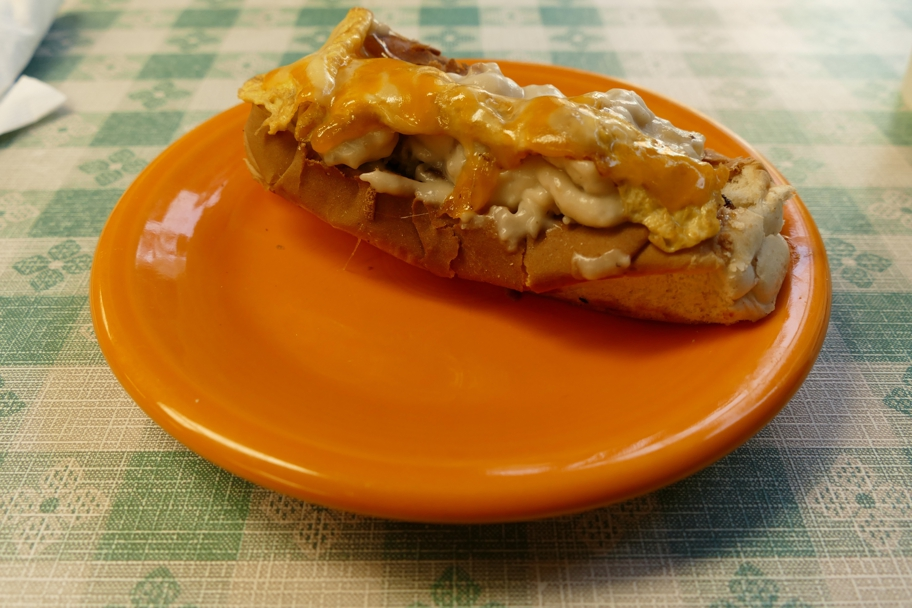

At the Swiftwater Cafe, run by whitewater rafting enthusiasts and a player in West Virginia's serious hotdog scene. There is not, however, a hotdog inside this dish, but a breakfast sausage. I was pleased to be able to buy a Swiftwater T-shirt at their nearby general store, along with pepperoni rolls (another WV specialty) and a bottle of elderberry wine which is tasty but so strongly flavored that we still haven't finished it.
Charleston West Virginia